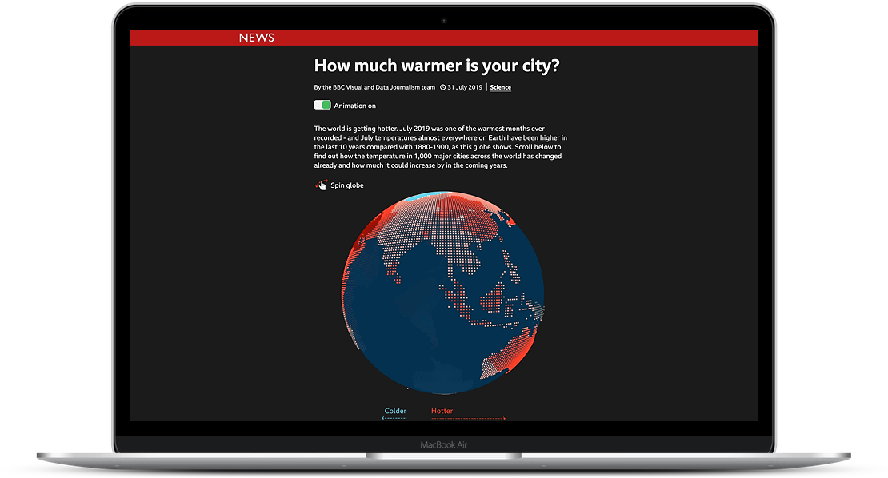

BBC NEWS · CLIMATEHow much warmer
is your city?
Making climate change feel local, with an interactive story exploring how temperatures have shifted across around 1,000 cities.
Read the case studyI build interactive data stories and tools that make complex things easier to see, understand and use.
See selected workA LITTLE ABOUT ME
I’m Becky, a software engineer who brings data to life and makes digital experiences more accessible. I like getting to the heart of a problem, then working with people across design, product and editorial to turn it into something clear and useful.
I’ve spent the last decade making interactive journalism at BBC News and data visualisation tools at Flourish, now part of Canva.
A bit more about meSELECTED CASE STUDIES

BBC NEWS · CLIMATEMaking climate change feel local, with an interactive story exploring how temperatures have shifted across around 1,000 cities.
Read the case study GLOBAL COAL PLANT TRACKER
GLOBAL COAL PLANT TRACKERConnecting multiple visualisations so people can explore complex energy infrastructure data together, not chart by chart.
AND THERE’S MORE
OUTSIDE THE CASE STUDIES
SAY HELLO
I’m always happy to talk about data, accessibility, visual storytelling, and the best gig you’ve been to lately.
Find me on LinkedIn